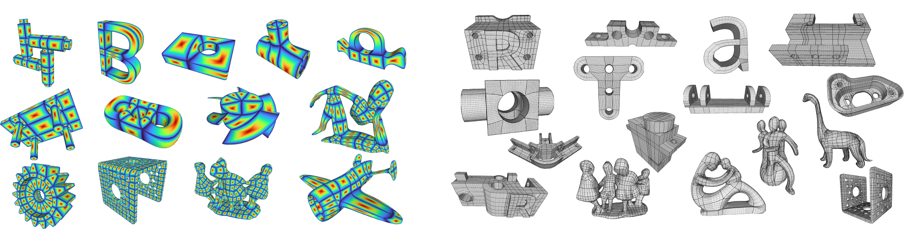
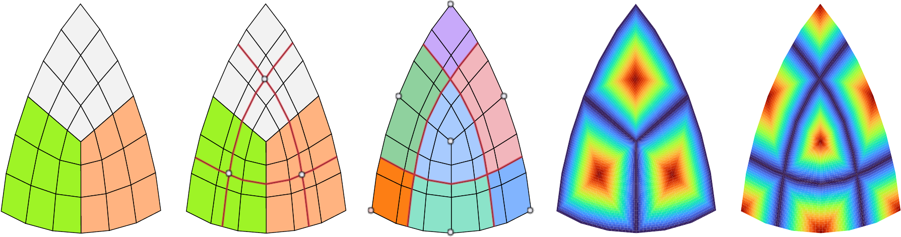
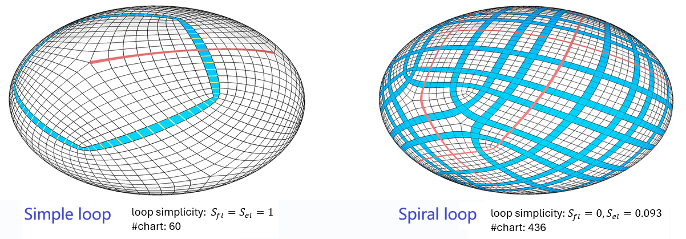
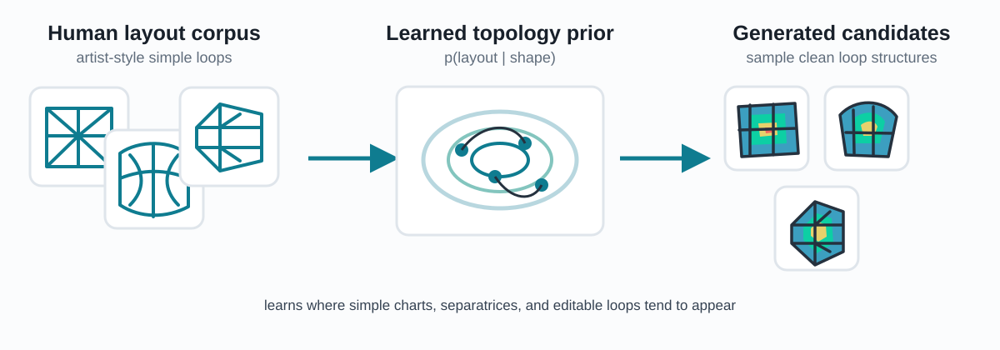
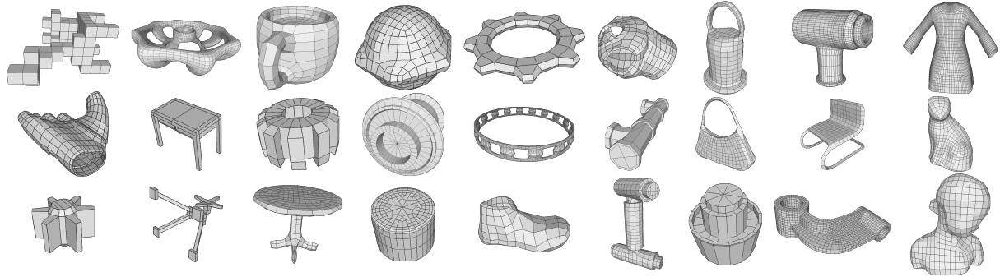
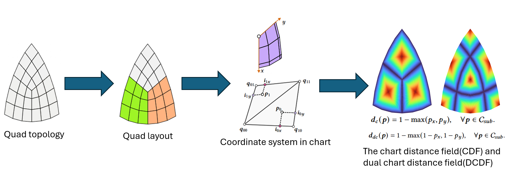
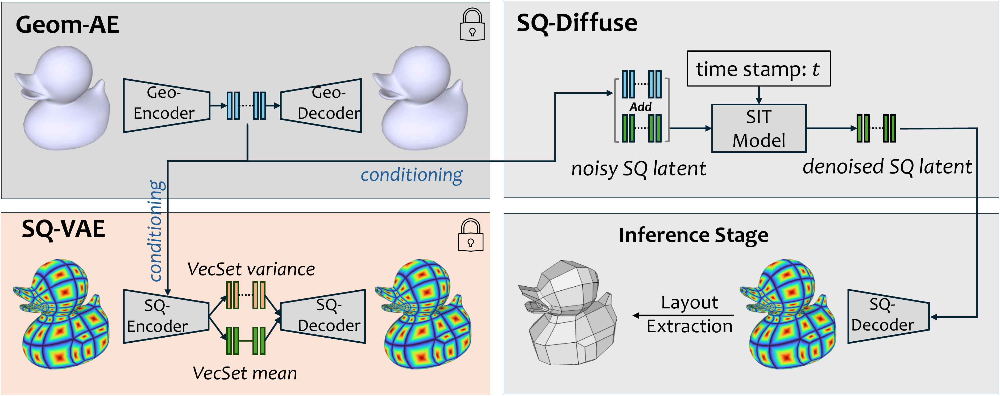
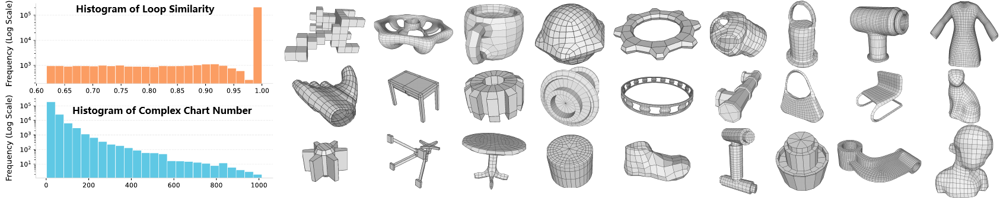
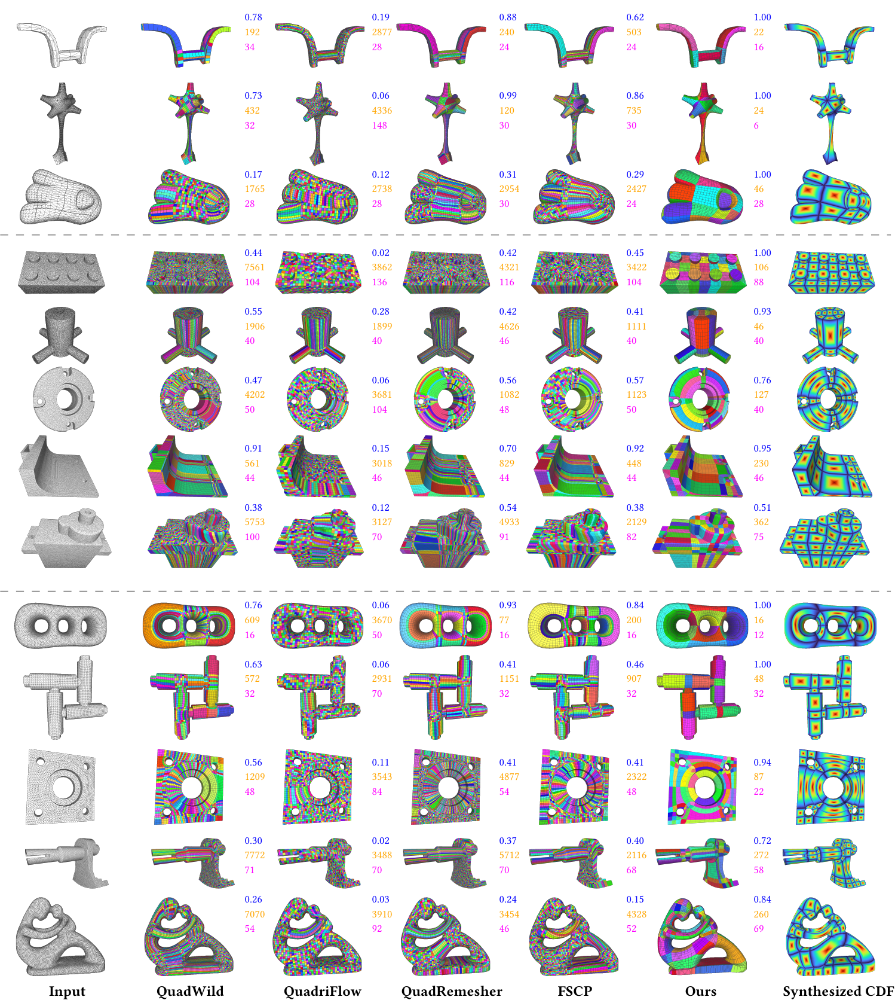
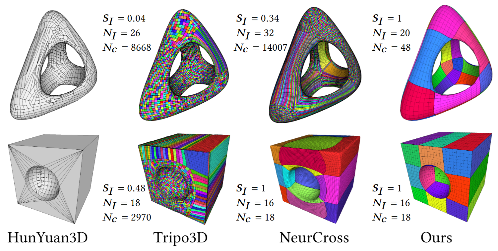

Editable means loop-editable
In modeling workflows, editability is directly tied to whether face-loops and edge-loops can be selected, followed, and modified without spiraling or self-intersection.
SIGGRAPH / ACM TOG 2026
A diffusion-based framework that turns discrete quad layout generation into continuous field synthesis, producing clean, loop-friendly quad layouts for editing and modeling.

Abstract
3D shapes from scanning, reconstruction, or AI-generated content often lack simple quad mesh layouts—critical for efficient editing and modeling. Existing quad-remeshing techniques typically produce complex layouts with irregular loops, leading to tedious manual cleanup and extensive algorithm tuning.
We introduce SQuadGen, a diffusion-based generative framework that leverages Chart Distance Fields (CDF) to synthesize simple quad layouts on 3D shapes. Our approach addresses two key challenges: (1) the discrete nature of mesh connectivity, which hinders learning, and (2) the scarcity of large-scale datasets with simple quad meshes.
To overcome the first, we propose CDF, a continuous surface-based representation enabling effective learning and synthesis of quad layouts. To address the second, we define loop-aware simplicity metrics and construct a large-scale dataset of high-quality quad layouts recovered from public 3D repositories through a robust quad-recovery pipeline.
Extensive evaluations across diverse 3D inputs show that SQuadGen consistently outperforms existing methods, producing robust, artist-friendly simple quad layouts.
Why Loop Simplicity Matters
Quad layouts become useful when their loops support direct modeling operations. Artists routinely select edge-loops, face-loops, and edge-rings to extrude, deform, sharpen, or refine a region.
SQuadGen targets simple layouts whose loops are easy to follow and edit, so generated assets can move more naturally into standard modeling workflows.

Measuring Editability
In modeling workflows, editability is directly tied to whether face-loops and edge-loops can be selected, followed, and modified without spiraling or self-intersection.
We define loop simplicity to measure the area controlled by simple loops, turning editable layout quality into a concrete score instead of a subjective visual impression.
Methods described as artist-like often rely on ambiguous visual criteria. Loop simplicity provides a direct, reproducible way to compare whether a generated layout is actually suitable for editing.
Key Ideas

CDF and DCDF encode chart centers, boundaries, and flow directions as continuous scalar fields on the surface, bypassing direct prediction of discrete quad connectivity.

Loop-aware scores evaluate whether face-loops and edge-loops stay simple, making layout quality measurable in terms of editability rather than geometry error alone.

The model learns topology patterns from artist-authored and recovered quad layouts, capturing human priors for where clean loops and charts should appear.

A recovery pipeline and simplicity metrics curate 230k high-quality quad layouts, filtering for editability instead of only geometric reconstruction accuracy.
Chart Distance Field

CDF preserves chart centers, boundaries, and flow structure as an easy-to-learn continuous field, turning discrete topology generation into a learnable field synthesis problem.
Frame-field pipelines usually predict local directions and rely on integer programming to reconstruct the final quad mesh, which can miss the original layout and produce locally plausible layouts with spiral loops. CDF directly represents layout structure, giving the model a global signal for simple, editable loops.
Method

Sample surface points and normals from a triangle mesh, including open or scanned geometry.
Geom-AE encodes surface geometry into VecSet latent tokens with global attention.
A geometry-conditioned latent diffusion model generates layout latents for CDF and DCDF fields.
Region growing, chart boundary tracing, and refinement convert fields into editable quad meshes.
The central design choice is to generate layout-aware scalar fields instead of predicting mesh topology directly. This keeps the learning target continuous while preserving the global regularity needed for face-loops, edge-loops, and edge-rings.
Loop Simplicity Metrics
We define a loop as simple when it avoids self-intersection and spiraling.
Loop simplicity measures the area ratio of regions controlled by simple loops. A score of 1 means all face-loops and edge-loops are simple; lower scores indicate that complex or spiraling loops occupy more of the mesh.
Face-loop simplicity
Edge-loop simplicity
Overall loop simplicity
Fs and Es are the subsets of simple face-loops and edge-loops; Fall and Eall are all loops. The score is therefore an area-weighted ratio of simple loops to all loops.
Dataset
We recover original quad topology from public 3D repositories such as Objaverse and combine it with outputs from existing remeshing tools.
Loop simplicity filters these candidates into a large-scale, diverse 230k-shape simple quad layout dataset, giving SQuadGen a generative topology prior over coherent, editable quad layouts.

Results

Case Study
We compare SQuadGen with HunYuan3D Retopology, Tripo3D Retopology, and NeurCross on two simple examples. Even here, competing learning-based systems can introduce triangles, spiral loops, excessive chart counts, or feature misalignment, while SQuadGen keeps a compact and editable quad layout.

Interactive CDF Explorer
We provide an interactive gallery of synthesized Chart Distance Fields for 28 Model300 shapes, including failure cases. For each shape, four CDFs are generated with different random seeds and rendered as color-textured GLB models. Drag any viewer to rotate — the four seeds in the same row stay in sync.
Citation
@article{kong2026squadgen,
title = {SQuadGen: Generating Simple Quad Layouts via Chart Distance Fields},
author = {Kong, Youkang and Liu, Yang and Dong, Yue and Tong, Xin and Shum, Heung-Yeung},
journal = {ACM Trans. Graph. (SIGGRAPH)},
volume = {45},
number = {4},
year = {2026},
}
The comparison spans Part1k, ABC1k, and Model300 examples. From left to right, each row shows the input triangle mesh, outputs from QuadWild, QuadriFlow, QuadRemesher, FSCP, and the SQuadGen result with its synthesized CDF.
Across Part1k, ABC1k, and Model300, SQuadGen yields simpler loop structures and lower chart complexity while preserving major sharp features.